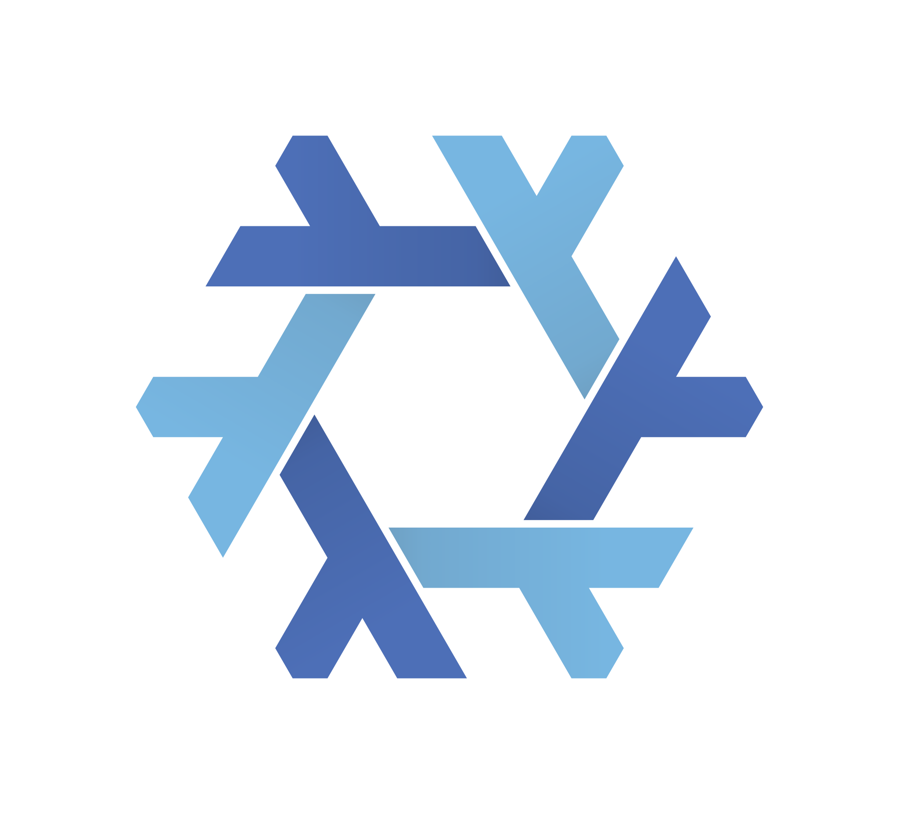

Meet Mu,
a μ sized agent harness for the rest of us.

nix run github:azu0609/mu
FAQ
Should you have any questions, please feel free to contact us through GitHub.
It depends on curl and ripgrep, fuck you mean μ sized?
Agents love using curl and rg on their own. So, we’ve asked ourselves: “why not use it in the harness too?”, and the answer was it.
How many tokens does it use?
We aim for ~64 input tokens, with system instructions and tool definitions combined. The exact base input tokens may inflate significantly depending on your environment. Learn More.
How am I supposed to use my Codex/Claude/Gemini subs?
To keep code focused on the harness, we only implement a small subset of the stateless OpenAI Responses API. We recommend using CLIProxyAPI and pointing mu to your CLIProxyAPI instance for such use cases.
How do I use two providers without re-launching consistently?
CLIProxyAPI can become a nearly transparent OpenAI Compatible API gateway (openai-compatibility for Chat Completions, codex-api-key for Responses API). Use that.